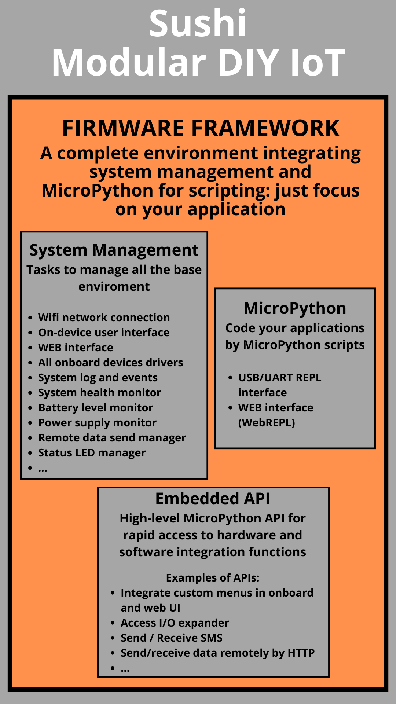
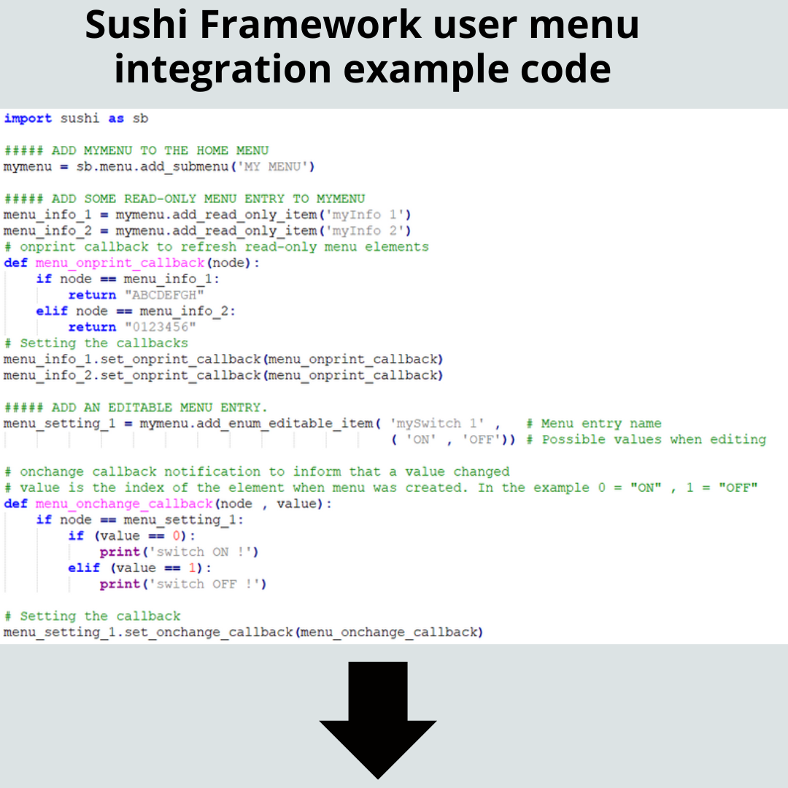
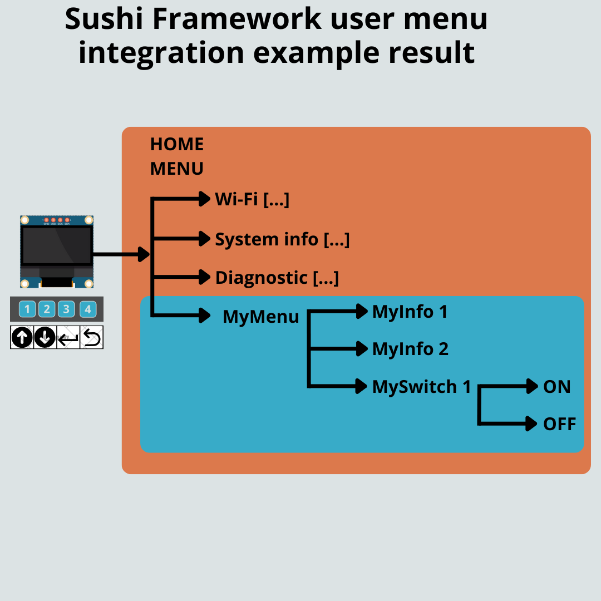
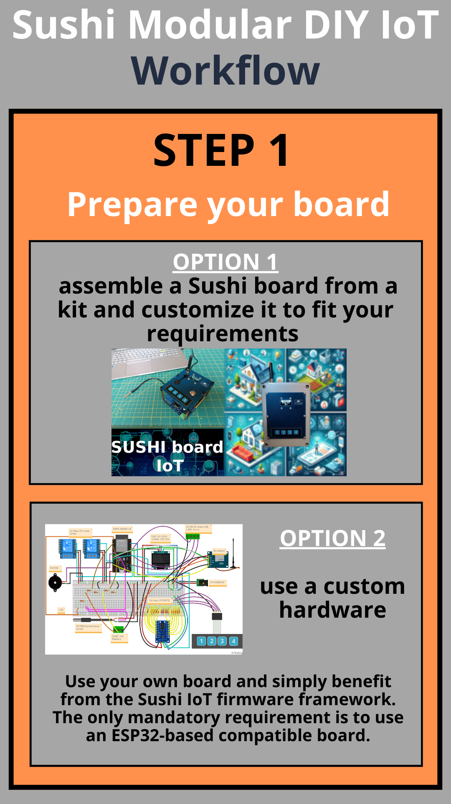
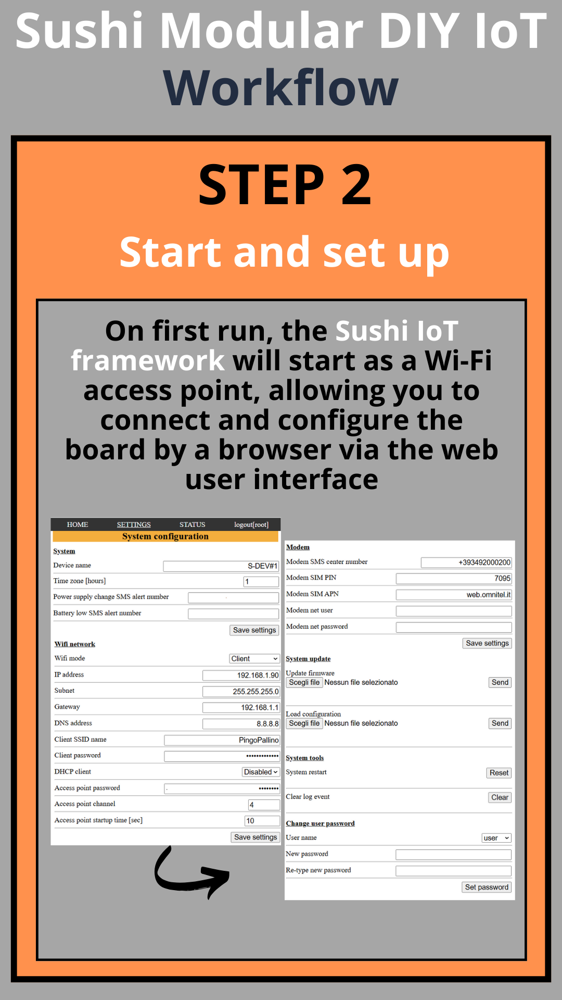
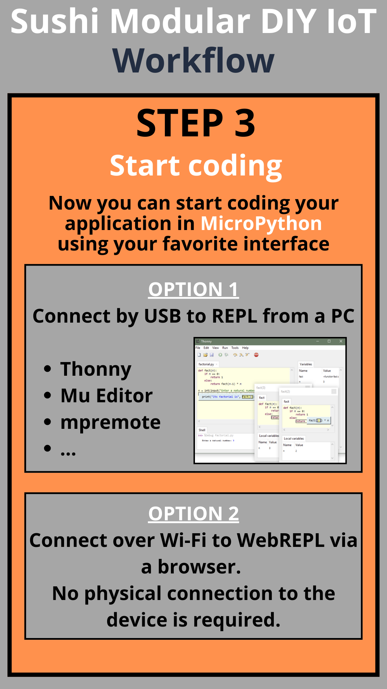
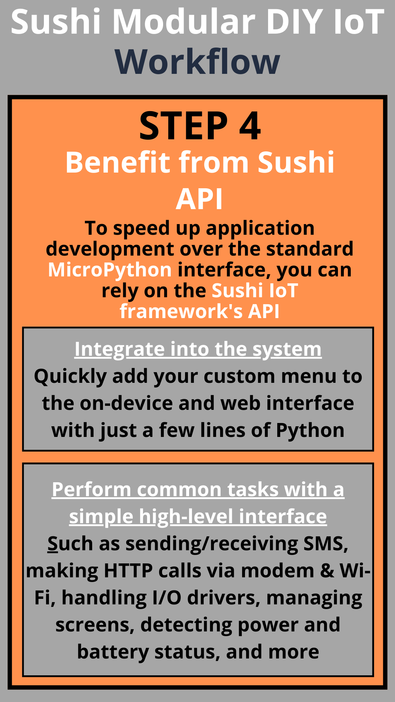

Sushi IoT Framework
Sushi IoT is a firmware framework for boards based on ESP32 SoC, providing an environment that integrates solid system management with MicroPython.
It is useful for students and makers to accelerate projects by using reliable building blocks to manage core functions, allowing you to focus on application development without getting lost in low-level system details.
Overview

Features
Works on very common commercial boards based on ESP32 SoC, widely available online for DIY electronics projects.
It simplifies development:
- Hardware management: Wi-Fi, LCD, keyboard, modem, I/O expansion, relays, power detection, battery level, buzzer.
- Software features: System management via web UI (network and system settings, logs, status, etc.) and a physical interface for on-device menus.
- Embedded MicroPython environment: Users can run their own scripts freely, while built-in libraries provide optional system management features.
- Embedded high-level MicroPython libraries for rapid access to hardware and software functions (custom menus, web pages, I/O expansion, SMS, HTTP requests, etc.).
Manages all essential components typically present in an IoT system, regardless of the specific application:
- Physical interface management (keyboard, display, status LEDs)
- Wireless connection as client or access point
- Drivers for all hardware components present on the board (I/O expander, modem, etc.)
- Web interface with user-level access (web server and UI)
- Modular menu management for physical interface
- High-level API for many typical functions: HTTP requests, SMS, GSM calls, web server extension, I2C communication, etc.
Other Resources
- Sushi-IoT project on Kickstarter
- Sushi-IoT on Instagram
- Sushi-IoT-Board documentation
- Espressif ESP32-DevKitC V4 user guide
- MicroPython for ESP32
Code Demo
Manage relays via a custom menu
Custom menu integration
 
Applications
- Student experiments
- Home automation systems
- IoT central units
- Alarm systems
- Domotics servers
- Remote monitoring and data sampling systems (e.g., weather stations)
- Local and remote device control (via local interface, web interface, or modem)
Workflow
Typical Sushi IoT Framework Project Workflow
| Step #1 Prepare your board |
Step #2 Start and set up |
|---|---|
|  |  |
| Step #3 Start coding |
Step #4 Benefit from the Sushi API |
|---|---|
|  |  |
Credits
This project embeds MicroPython, a lean and efficient implementation of Python 3 optimized for microcontrollers.
We acknowledge and thank the MicroPython developers and contributors for their outstanding work.
MicroPython is released under the MIT License.
Roadmap
08/2025
- Base release that works for ESP32DevKitC with WROVER chip (and Sushi Board based on this module)
- Base documentation
From 09/2025
- Extend MicroPython libraries with step-by-step software examples and projects—not just basic tasks like blinking an LED, but full-scale DIY electronics systems based on the same core.
- Support for other ESP32 SoCs and boards